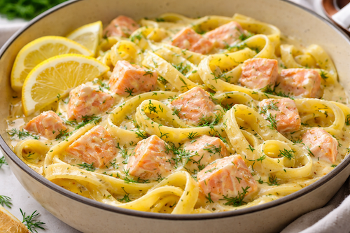

Ingrédients
Nombre de personnes :
4 personnes
Les quantités s’ajustent automatiquement.
Optionnel : persil frais, aneth ou ciboulette, citron pour garnir
Préparation des pâtes au saumon
- Fais cuire les pâtes dans une grande casserole d’eau bouillante salée selon le temps indiqué.
- Fais revenir l’échalote dans une poêle.
- Ajoute le saumon coupé en dés, puis la crème.
- Égoutte les pâtes et mélange-les à la sauce.
- Égoutte les pâtes, ajoute-les dans la poêle et mélange bien pour les enrober de sauce.